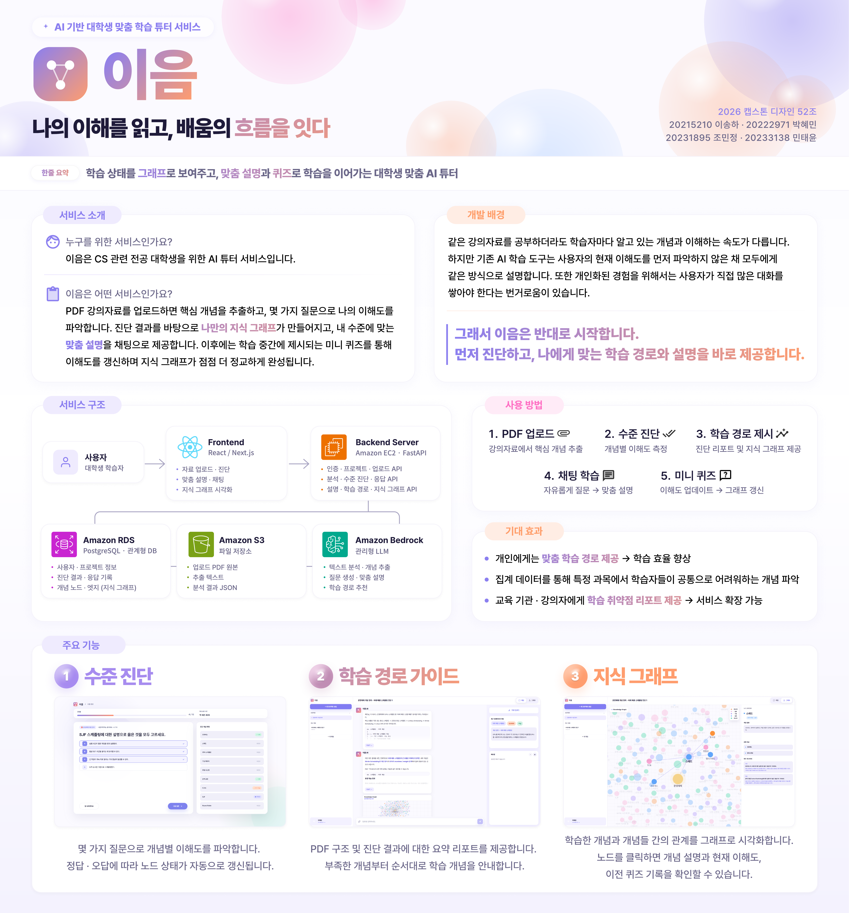
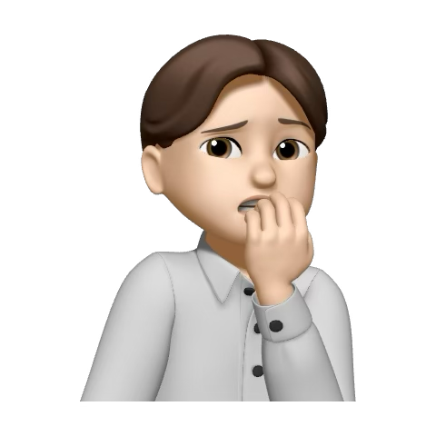
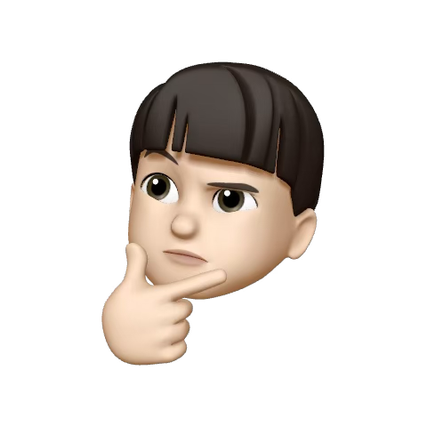

수준 진단 기반 개인화 학습
단순 챗봇 응답이 아니라 먼저 이해도를 측정하고 설명 난이도를 조정합니다.
이음은 학습자료와 수준 진단 결과를 기반으로 개인의 이해 상태를 분석하고, 개념별 다음 학습 방향을 이어주는 AI 학습 튜터입니다.

기존 LLM 기반 학습 서비스는 사용자의 현재 이해 수준을 충분히 반영하지 못하고, 단순 질의응답 중심으로 동작하는 경우가 많습니다.
EEUM은 사용자의 학습 자료와 수준 진단 결과를 기반으로 개인의 이해 상태를 분석하고 맞춤형 학습 경험을 제공하는 것을 목표로 합니다.
단순 챗봇 응답이 아니라 먼저 이해도를 측정하고 설명 난이도를 조정합니다.
핵심 개념과 선수 관계를 기준으로 현재 학습 출발점을 찾습니다.
업로드한 자료에서 개념을 뽑고, 그래프와 검색 기반 답변을 결합합니다.
운영체제, 자료구조처럼 프로젝트별 개념 상태를 분리해 관리합니다.
채팅 기록, 진단 결과, 메모를 함께 남겨 다시 이어 공부할 수 있습니다.
최근 대화에서 반복된 개념을 회상 연습으로 점검합니다.
시연 영상 추가 예정

Frontend
20215210
songha327@kookmin.ac.kr
Backend
20222971
hyeals22@gmail.com
Backend
20231895
chominjung821@kookmin.ac.kr

AI
20233138
mintaeyoon@kookmin.ac.kr